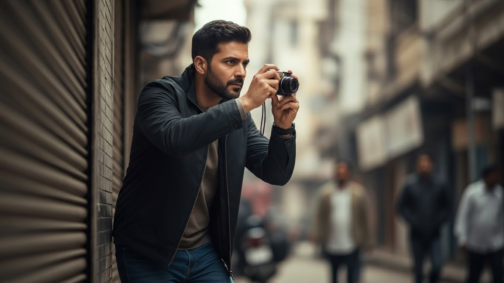

<!DOCTYPE html>
<html lang="en">
<head>
    <meta name="viewport" content="width=device-width, initial-scale=1" />
    <meta http-equiv="Content-Type" content="text/html; charset=utf-8" />
    <link rel="icon" type="image/png" href="images/favicon-32x32.png" sizes="16x16" />
    <title>Private Detective in Noida | Best Detective Agency – Espionage India</title>
    <meta name="title" content="Private Detective in Noida | Best Detective Agency – Espionage India">
    <meta name="description" content="Looking for a Private Detective in Noida? Espionage India is a trusted Private Detective Agency in Noida offering discreet personal, matrimonial & corporate investigations by top detectives.">
    <meta name="keywords" content="Private Detective in Noida, Best Private Detective in Noida, Private Detective Agency in Noida, Best Detective Agency in Noida, Best Detective in Noida, Best Private Detective Agency in Noida, Top Detective Agency in Noida, Top Detective in Noida, Private Investigator in Noida">
    <meta name="robots" content="index, follow">
    <meta name="language" content="English">
    <meta name="author" content="Espionage India">
    <link rel="canonical" href="https://espionageindia.com/private-detective-in-Noida.html" />
    <meta property="og:title" content="Private Detective in Noida | Best Detective Agency – Espionage India">
    <meta property="og:description" content="Hire a Private Detective in Noida from Espionage India – the Best Private Detective Agency in Noida known for confidential, professional & result-driven investigation services.">
    <meta property="og:site_name" content="Espionage India">
    <meta property="og:url" content="https://espionageindia.com/private-detective-in-Noida.html">
    <meta property="og:type" content="website">
    <meta property="og:image" content="/assets/images/off.png">
    <meta name="robots" content="max-image-preview:large">
</head>
</html>

<script type="application/ld+json">
{
  "@context": "https://schema.org",
  "@type": "FAQPage",
  "mainEntity": [
    {
      "@type": "Question",
      "name": "How long does a typical investigation take when hiring a private detective in Noida?",
      "acceptedAnswer": {
        "@type": "Answer",
        "text": "The duration of an investigation depends on the nature and complexity of the case. Simple background verification or pre-matrimonial checks may take 3–5 days, while detailed surveillance or corporate investigations can take several weeks. A professional private detective in Noida provides a clear timeline after understanding the case requirements and keeps clients informed throughout the process."
      }
    },
    {
      "@type": "Question",
      "name": "Is it legal to hire a private detective agency in Noida for personal matters?",
      "acceptedAnswer": {
        "@type": "Answer",
        "text": "Yes, hiring a private detective agency in Noida for lawful personal investigations is legal. Services such as matrimonial verification, background checks, and missing person assistance are conducted within legal boundaries. Ethical detective agencies strictly follow privacy laws and do not engage in illegal activities such as phone tapping or unauthorized access to personal data."
      }
    },
    {
      "@type": "Question",
      "name": "How much does it cost to hire a private detective in Noida?",
      "acceptedAnswer": {
        "@type": "Answer",
        "text": "The cost of hiring a private investigator in Noida varies depending on the type of investigation, duration, and resources required. Basic surveillance cases may start from a few thousand rupees per day, while complex corporate or long-term investigations can cost more. Reputed detective agencies provide transparent pricing after understanding the case details, with no hidden charges."
      }
    },
    {
      "@type": "Question",
      "name": "How do I know whether to hire a private detective or contact the police?",
      "acceptedAnswer": {
        "@type": "Answer",
        "text": "If there is an immediate threat, criminal activity, or emergency, contacting the police should be the first step. A private detective in Noida is suitable for discreet investigations such as background verification, surveillance, or evidence gathering for legal purposes. Many clients consult a detective agency when confidentiality and detailed inquiry are required."
      }
    },
    {
      "@type": "Question",
      "name": "Will my identity remain confidential when using a detective agency in Noida?",
      "acceptedAnswer": {
        "@type": "Answer",
        "text": "Yes, confidentiality is a core principle of professional detective services. A reliable private detective agency in Noida protects client identity and case details through strict internal protocols and non-disclosure practices. Information is shared only on a need-to-know basis to ensure complete privacy."
      }
    },
    {
      "@type": "Question",
      "name": "What documents are required to hire a private detective in Noida?",
      "acceptedAnswer": {
        "@type": "Answer",
        "text": "Clients are generally required to provide a valid government-issued photo ID and address proof. For corporate investigations, company registration documents and an authorization letter may be required. Genuine detective agencies in Noida follow proper KYC procedures to ensure legal compliance."
      }
    },
    {
      "@type": "Question",
      "name": "Can a private detective in Noida provide evidence that is admissible in court?",
      "acceptedAnswer": {
        "@type": "Answer",
        "text": "Yes, evidence collected through legal methods by a professional private detective agency in Noida can be used in court. Investigators follow proper documentation and evidence-handling procedures so that findings may support civil, criminal, or family court cases, subject to judicial discretion."
      }
    },
    {
      "@type": "Question",
      "name": "How can I verify whether a detective agency in Noida is genuine?",
      "acceptedAnswer": {
        "@type": "Answer",
        "text": "To verify a genuine detective agency in Noida, check for business registration, GST details, a physical office address, and transparent communication. Reputed agencies are open about their experience, service process, and legal compliance. Avoid agencies that demand full payment upfront without documentation."
      }
    },
    {
      "@type": "Question",
      "name": "Are urgent or emergency investigation services available in Noida?",
      "acceptedAnswer": {
        "@type": "Answer",
        "text": "Yes, many private detective agencies in Noida offer urgent investigation services for time-sensitive cases such as missing persons or immediate surveillance needs. Emergency services are subject to availability and may involve additional charges due to rapid deployment of resources."
      }
    }
  ]
}
</script>


  
   
    <!-- The CSS from the original page is kept here for styling -->
    <style>
        :root {
            --primary-red: #ed1a25;
            --primary-gold: #faae3c;
            --primary-dark: #1a1a1a;
            --primary-gradient: linear-gradient(135deg, #ed1a25 0%, #faae3c 100%);
            --dark-gradient: linear-gradient(135deg, #1a1a1a 0%, #2a2a2a 50%, #1a1a1a 100%);
            --light-bg: #f8f8f8;
        }
        * {
            margin: 0;
            padding: 0;
            box-sizing: border-box;
            scroll-behavior: smooth;
        }
        body {
            font-family: 'DM Sans', sans-serif;
            line-height: 1.8;
            color: #333;
            overflow-x: hidden;
            background: #fff;
        }
        /* --- Header & Navigation (Copied from index.html) --- */
        header {
            background: rgba(255, 255, 255, 0.95);
            backdrop-filter: blur(20px);
            padding: 1rem 0;
            position: fixed;
            width: 100%;
            top: 0;
            z-index: 1000;
            box-shadow: 0 4px 30px rgba(0, 0, 0, 0.05);
            border-bottom: 1px solid rgba(237, 26, 37, 0.1);
        }
        nav {
            max-width: 1400px;
            margin: 0 auto;
            display: flex;
            justify-content: space-between;
            align-items: center;
            padding: 0 2rem;
        }
        .logo {
            font-size: 1.8rem;
            font-weight: 700;
            letter-spacing: -1px;
            display: flex;
            align-items: center;
            gap: 0.5rem;
            text-decoration: none;
            color: var(--primary-dark);
        }
        .logo-img {
            /* Control the size of the logo image */
            height: 45px;
            width: auto;
            max-width: 200px;
            transition: transform 0.3s;
        }
        .logo:hover .logo-img {
            transform: scale(1.05);
        }
        .nav-links {
            display: flex;
            gap: 2.5rem;
            list-style: none;
        }
        .nav-links a {
            color: var(--primary-dark);
            text-decoration: none;
            font-weight: 500;
            transition: all 0.3s;
            position: relative;
            font-size: 1rem;
        }
        .nav-links a::after {
            content: '';
            position: absolute;
            bottom: -5px;
            left: 0;
            width: 0;
            height: 3px;
            background: var(--primary-gradient);
            transition: width 0.3s;
            border-radius: 10px;
        }
        .nav-links a:hover::after, .nav-links a.active::after {
            width: 100%;
        }
        .hamburger {
            display: none;
            cursor: pointer;
            flex-direction: column;
            gap: 5px;
            z-index: 1001;
        }
        .hamburger .bar {
            width: 28px;
            height: 3px;
            background-color: var(--primary-dark);
            border-radius: 5px;
            transition: all 0.3s ease-in-out;
        }
        .mobile-nav {
            display: flex;
            flex-direction: column;
            justify-content: center;
            align-items: center;
            gap: 2rem;
            position: fixed;
            top: 0;
            right: -100%;
            width: 100%;
            height: 100vh;
            background-color: rgba(255, 255, 255, 0.98);
            backdrop-filter: blur(15px);
            list-style: none;
            transition: right 0.4s ease-in-out;
            z-index: 1000;
        }
        .mobile-nav.active {
            right: 0;
        }
        .mobile-nav a {
            font-size: 2rem;
            color: var(--primary-dark);
            text-decoration: none;
            font-weight: 700;
        }
        .hamburger.active .bar:nth-child(1) {
            transform: translateY(8px) rotate(45deg);
        }
        .hamburger.active .bar:nth-child(2) {
            opacity: 0;
        }
        .hamburger.active .bar:nth-child(3) {
            transform: translateY(-8px) rotate(-45deg);
        }
        /* --- End Header & Navigation Styles --- */

        .blog-hero {
            background: var(--dark-gradient);
            color: white;
            padding: 180px 5% 80px;
            text-align: center;
        }
        .blog-hero h1 {
            font-size: clamp(2.5rem, 6vw, 4.5rem);
            margin-bottom: 1.5rem;
            font-weight: 800;
            line-height: 1.2;
            letter-spacing: -2px;
            max-width: 1200px;
            margin-left: auto;
            margin-right: auto;
        }
        .blog-hero .meta {
            font-size: 1rem;
            opacity: 0.8;
            margin-bottom: 1rem;
        }
        .blog-hero .excerpt {
            font-size: clamp(1.1rem, 2vw, 1.3rem);
            max-width: 900px;
            margin: 0 auto;
            opacity: 0.9;
            line-height: 1.8;
        }
        .gradient-text {
            background: var(--primary-gradient);
            -webkit-background-clip: text;
            -webkit-text-fill-color: transparent;
            background-clip: text;
        }
        .blog-content {
            max-width: 1220px;
            margin: 0 auto;
            padding: 80px 5%;
        }
        .blog-content h2 {
            font-size: clamp(2rem, 4vw, 2.8rem);
            margin-top: 3rem;
            margin-bottom: 1.5rem;
            font-weight: 800;
            line-height: 1.3;
            color: var(--primary-dark);
        }
        .blog-content h3 {
            font-size: clamp(1.5rem, 3vw, 2rem);
            margin-top: 2.5rem;
            margin-bottom: 1rem;
            font-weight: 700;
            color: var(--primary-dark);
        }
        .blog-content h4 {
            font-size: clamp(1.2rem, 2.5vw, 1.5rem);
            margin-top: 2rem;
            margin-bottom: 0.8rem;
            font-weight: 700;
            color: #555;
        }
        .blog-content p {
            font-size: clamp(1.05rem, 2vw, 1.15rem);
            line-height: 1.9;
            margin-bottom: 1.5rem;
            color: #444;
        }
        .blog-content ul, .blog-content ol {
            margin: 1.5rem 0;
            padding-left: 2rem;
        }
        .blog-content li {
            font-size: clamp(1.05rem, 2vw, 1.15rem);
            line-height: 1.9;
            margin-bottom: 1rem;
            color: #444;
        }
        .blog-content strong {
            color: var(--primary-dark);
            font-weight: 700;
        }
        .highlight-box {
            background: linear-gradient(135deg, rgba(237, 26, 37, 0.05), rgba(250, 174, 60, 0.05));
            border-left: 4px solid var(--primary-red);
            padding: 2rem;
            margin: 2.5rem 0;
            border-radius: 12px;
        }
        .highlight-box p {
            margin-bottom: 0;
            font-size: clamp(1.1rem, 2vw, 1.2rem);
            font-style: italic;
            color: #555;
        }
        .featured-image {
            width: 100%;
            max-width: 100%;
            height: auto;
            border-radius: 20px;
            margin: 3rem 0;
            box-shadow: 0 20px 60px rgba(0, 0, 0, 0.15);
        }
        .image-caption {
            text-align: center;
            font-size: 0.95rem;
            color: #888;
            margin-top: -2rem;
            margin-bottom: 2rem;
            font-style: italic;
        }
        .cta-box {
            background: var(--primary-gradient);
            color: white;
            padding: 3rem;
            border-radius: 25px;
            text-align: center;
            margin: 4rem 0;
            box-shadow: 0 15px 50px rgba(237, 26, 37, 0.3);
        }
        .cta-box h3 {
            font-size: clamp(1.8rem, 4vw, 2.5rem);
            margin-bottom: 1rem;
            color: white;
        }
        .cta-box p {
            font-size: 1.15rem;
            margin-bottom: 2rem;
            opacity: 0.95;
            color: white;
        }
        .btn {
            display: inline-flex;
            align-items: center;
            justify-content: center;
            gap: 0.5rem;
            padding: 1rem 2.5rem;
            background: white;
            color: var(--primary-dark);
            text-decoration: none;
            border-radius: 50px;
            transition: all 0.3s;
            font-size: 1.1rem;
            font-weight: 600;
            box-shadow: 0 8px 25px rgba(0, 0, 0, 0.2);
        }
        .btn:hover {
            transform: translateY(-3px);
            box-shadow: 0 12px 35px rgba(0, 0, 0, 0.3);
        }

        .divider {
            width: 100px;
            height: 4px;
            background: var(--primary-gradient);
            margin: 3rem auto;
            border-radius: 10px;
        }
        /* --- Footer (Copied from index.html) --- */
        footer {
            background: #0d0d0d;
            color: #aaa;
            padding: 80px 0 30px;
        }
        .footer-content {
            display: grid;
            grid-template-columns: repeat(auto-fit, minmax(250px, 1fr));
            gap: 3rem;
            margin-bottom: 3rem;
            max-width: 1400px; /* Added max-width for container look */
            margin-left: auto;
            margin-right: auto;
            padding: 0 2rem; /* Added padding for container look */
        }
        .footer-section h3 {
            margin-bottom: 1.5rem;
            font-size: 1.4rem;
            color: white; /* Explicitly set text to white in footer sections */
        }
        .footer-section p,
        .footer-section a {
            color: #aaa;
            text-decoration: none;
            display: block;
            margin-bottom: 0.8rem;
            transition: color 0.3s;
            font-size: 1rem;
            line-height: 1.7; /* Copied line-height from index.html */
        }
        .footer-section a:hover {
            color: var(--primary-red);
        }
        .footer-bottom {
            text-align: center;
            padding-top: 2rem;
            border-top: 1px solid #2a2a2a;
            color: #888;
            font-size: 0.9rem;
            max-width: 1400px; /* Added max-width for container look */
            margin: 0 auto;
            padding: 0 2rem; /* Added padding for container look */
        }
        /* --- End Footer Styles --- */

        @media (max-width: 1024px) {
            .nav-links {
                display: none;
            }
            .hamburger {
                display: flex;
            }
        }
        @media (max-width: 768px) {
            .blog-hero {
                padding: 140px 5% 60px;
            }
            .blog-content {
                padding: 60px 5%;
            }
            .cta-box {
                padding: 2rem;
            }
        }
    </style>
</head>
<body>
    
     <!--Start of Tawk.to Script-->
<script type="text/javascript">
var Tawk_API=Tawk_API||{}, Tawk_LoadStart=new Date();
(function(){
var s1=document.createElement("script"),s0=document.getElementsByTagName("script")[0];
s1.async=true;
s1.src='https://embed.tawk.to/5fdb4d46df060f156a8dfabb/1epoabntg';
s1.charset='UTF-8';
s1.setAttribute('crossorigin','*');
s0.parentNode.insertBefore(s1,s0);
})();
</script>
<!--End of Tawk.to Script-->

    <!-- HEADER (Kept identical for navigation consistency) -->
    <header>
        <nav>
            <a href="/" class="logo">
                
            </a>
            <ul class="nav-links">
                <li><a href="#about">About</a></li>
                <li><a href="#services">Services</a></li>
                <li><a href="#process">Process</a></li>
                <li><a href="#team-members-visuals">Team</a></li>
                <li><a href="#achievements">Achievements</a></li>
                <li><a href="#testimonials">Results</a></li>
                <li><a href="#contact">Contact</a></li>
            </ul>
            <div class="hamburger">
                <span class="bar"></span>
                <span class="bar"></span>
                <span class="bar"></span>
            </div>
        </nav>
        <ul class="mobile-nav">
            <li><a href="#about">About</a></li>
            <li><a href="#services">Services</a></li>
            <li><a href="#process">Process</a></li>
            <li><a href="#team-members-visuals">Team</a></li>
            <li><a href="#achievements">Achievements</a></li>
            <li><a href="#testimonials">Results</a></li>
            <li><a href="#contact">Contact</a></li>
        </ul>
    </header>
    <main>
        <section class="blog-hero">
            <div class="meta">Expert Investigation Services • Noida</div>
            <h1> Private Detective <span class="gradient-text"> in Noida </span>: Your Trusted Investigation Partner at Espionage India</h1>
            <p class="excerpt">Private Detective in Noida: Professional, Confidential & Legal Investigation Services in Noida</p>
        </section>
        <article class="blog-content">
            <p>A private detective in Noida is capable of a lot more than just following people around; this is a professional who can, and will, uncover the truth without anyone knowing. The very first time I stepped into the Noida office of Espionage India, I saw the wall covered with letters of appreciation from clients whose lives had taken a turn for the better because of our investigations. That's when I realized that being a private detective in Noida isn't just a job – it's a responsibility that can literally transform people's futures.</p>
            <h2>Why Choose Espionage India as Your <span class="gradient-text"> Private Detective in Noida</span></h2>
            <p>Let me be completely honest with you – Noida is flooded with investigation agencies claiming to be the best private detective in Noida. But here's what sets Espionage India apart: we've been solving cases in the NCR region for over 15 years, and our success rate speaks volumes. When you hire a private detective in Noida from our team, you're not getting someone who learned investigation from YouTube videos. You're getting a professional who has handled over 2,000 successful cases, from corporate espionage to personal matters.</p>
            
             <p>The foundation of our detective agency in Noida is based on a very uncomplicated principle: every single investigation, regardless of whether it is an exclusive corporate investigation or a personal affair that you cannot just sleep over, has to be treated with the same attention. We have provided help to global companies in their efforts to keep their trade secrets safe and we have also supported divorced couples emotionally by reuniting them with the past. The Best detective agency in Noida is not only characterized with modern gadgets but also by the mastery of human nature, the awareness of the area, and the patience to search until the truth is uncovered.</p>

            
            <p class="image-caption">Our team combines former law enforcement experience with cutting-edge technology for superior results in Noida.</p>

            <div class="divider"></div>

            <h2> What Makes Espionage India the <span class="gradient-text">Best Detective Agency in Noida?</span></h2>

      
            <p>I could tell you we're the best detective agency in Noida and leave it at that, but let me show you why. A month ago, a very upset father brought his case to us - his little girl had been unaccounted for for two days, and the law enforcement could not find her. Our private investigator squad in Noida worked very hard for three days straight, checking all the cameras in the area, following her digital traces, and talking to people who might have seen her. We located her in three days absolutely safe but scared. That's not just investigation work; that's giving a family their life back.</p>

            <p>As a leading private detective agency in Noida, we invest heavily in continuous training. Our investigators are certified in cyber forensics, financial fraud detection, and surveillance techniques. But more importantly, they understand the emotional weight of each case. When you search for the top detective agency in Noida, you're looking for someone who gets that this isn't just about gathering evidence – it's about providing peace of mind.</p>

            
    
            <section class="section" id="services">
            <h2>Services Offered by Our Private Detective Agency in Noida</h2>
            
            <div class="services-grid">
                <div class="service-card">
                    <h4>Matrimonial Investigations: When Trust Needs Verification</h4>
                    <p>Let's face it – marriage is a leap of faith, but sometimes you need to check where you're landing. Our private detective in Noida services include comprehensive pre-matrimonial investigations that go beyond the usual background checks. We verify educational qualifications, employment history, financial status, and even social reputation. As the best private detective agency in Noida, we've prevented countless potentially disastrous marriages by uncovering hidden truths – from undisclosed previous marriages to criminal records.</p>
                    <p>Post-matrimonial investigations are a sensitive affair. In case you have any doubts about fidelity or are looking for proof to support your divorce case, our detective agency in Noida treats such cases with the highest level of confidentiality. The intention is not to pass judgment; rather, it is to make the facts available to you so that you can decide your steps regarding your life wisely.</p>
                </div>
                
                <div class="service-card">
                    <h4>Corporate Investigation Services: Protecting Your Business Interests.</h4>
                    <p>In Noida's corporate jungle, information is power, and our top detective in the Noida team knows how to gather it legally and ethically. Employee background checking may appear to be a matter of course until you find out that the new CFO of your company has siphoned off money from his past firms. Just so, one of our customers faced it, and by our thorough investigation the loss of crores was averted.</p>
                     <p>We are a leading private investigation firm in Noida and we deal with matters relating to IP theft, competitive intelligence, and due diligence investigations. We were the ones who helped a tech startup find out that their principal developer was leaking proprietary code to a rival company. Our proof was so strong that it won the case and a settlement that was favorable to our client and his innovations was agreed upon.</p>
                </div>
                
                <div class="service-card">
                    <h4>Financial Fraud Investigations: Following the Money Trail</h4>
                    <p>When a private detective agency in Noida from Espionage India takes on a financial fraud case, we don't just look at the numbers—we understand the story they tell. Insurance fraud, investment scams, asset tracing—we've seen it all. Our best detective in Noida has just recently brought to light a complicated Ponzi scheme that has taken more than 200 investors and more than 50 crores. The planner considered himself a genius but our forensic accounting and monitoring methods disclosed the whole operation.</p>
                </div>
                
                
            </div>
        </section>

            <div class="cta-box">
                <h3>Need Confidential Investigation in Noida?</h3>
                <p>From pre-matrimonial checks to corporate fraud, our experienced team provides clear, indisputable evidence.</p>
                <a href="index.html#contact" class="btn">Schedule Confidential Consultation</a>
            </div>

            <h2>The Technology Edge: Modern  <span class="gradient-text">Investigation Techniques</span></h2>
            <p>To possess the title of the best detective agency in Noida, one has to be one step ahead constantly. To achieve this, we have modern top-grade surveillance machines, GPS tracking (when allowed legally), and cyber investigation gadgets. However, the efficiency of technology depends on the operator’s skills. Our detectives in Noida are skilled enough to merge antiquated investigation techniques with newer technology. We have already cracked some mysteries by making use of drone surveillance besides social media forensics.</p>
             <section class="section">
              <h2>Comprehending the Investigation Procedure: openness creates trust</h2>
            <p>If you select Espionage India as your detective agency in Noida
            we insist on total openness. What you can count on:</p>
            <ul style="margin-left: 2rem; margin-bottom: 1rem;">
                <li><strong>First Consultation:</strong>  No cost, secret talk about your situation. We'll let you know straight if we can assist or if your problem needs a different strategy.</li>
                <li><strong>Case Preparation:</strong> Thorough planning of the strategy, such as approximate time and money needed. Nothing extra to pay, no shocks.</li>
                <li><strong>Investigation Time:</strong>Periodic notifications of the progress. You will always know the situation with your case.</li>
                <li><strong>Evidence Presentation:</strong>Detailed report with proof, pictures, videos, and testimonies where necessary.</li>
                <li><strong>After-investigation Assistance:</strong> Support for subsequent actions, if it be legal dispute or personal choices.</li>
            </ul>
        </section>

            <div class="divider"></div>
            <h2><span class="gradient-text">Financial Factors:</span>Investment in Truth</h2>
            <p>"What is the price of a private detective in Noida?"- It is a question which all people ask but very few are willing to give a public answer.. At Espionage India, we believe in transparent pricing. Basic surveillance starts from ₹3,000 per day, while complex corporate investigations might run into lakhs. But here's the thing – what's the cost of NOT knowing? What's What is the worth of peace of mind? </p>

            <p>Our packages are tailored to the specific case's difficulty, the time taken, and the needed resources. Being the Top detective agency in Noida, we are not the most affordable choice, but we are the most detail-oriented. We have encountered a lot of clients who have approached us after spending money on unprofessional investigators who had given them either incomplete or unusable evidence.</p>

            <h2>Legal Compliance: Operating Within the Law</h2>
            <p>This is crucial – any private detective agency in Noida that promises to break laws for faster results is setting you up for legal trouble. Espionage India operates strictly within legal boundaries. We do not hack the phones, nor do we invade the premises, and also, we do not conduct illegal spying. All our practices are court-accepted as we are doing everything in the proper way.</p>

            <p>Our private investigators in Noida are experts in the Indian legislation concerning such matters as privacy, the collecting of evidence, and surveillance, among others. We keep a thorough record of our operations and are always careful to collect the evidence in a proper manner.. This might mean our investigations take longer, but it also means our findings actually help you achieve your goals.</p>

            
            

            <h2><span class="gradient-text">Client Confidentiality:</span> Your Secret is Safe With Us</h2>
            <p>Discretion isn't just a promise at Espionage India – it's our foundation. When you engage our detective agency in Noida, your identity and case details are protected by strict confidentiality agreements. Our researchers follow a need-to-know pattern, and we do not reveal the cases outside our organization.</p>
            <p>We have conducted inquiries into the lives of the rich and famous, politicians, and top business executives. Their trust in us, the the best private detective agency in Noida, is based on our consistent promise of confidentiality. Only the methods used are different, and the result is the same—privacy to spouses caught in a love triangle or to Fortune 500 companies.</p>
            

            <div class="divider"></div>

            <h2>Success Stories: <span class="gradient-text">Actual Outcomes from Actual Cases </span></h2>
            
                <p>The previous year, a pharmaceutical company contacted us with a suspicion about a former employee stealing data. Our Our private detective in Noida  team did a completely discreet investigation and found out that millions were being made off of theft of research data.Our evidence led to a verdict of guilty and the return of the rights to the intellectual property.</p>
                <p>In yet another scenario, a family was looking for a missing relative who had disappeared in peculiar ways. They used the regular methods and failed, but our best detective in Noida applied his unique combination of digital forensics and fieldwork and found the person in another state. The reunion was very emotional, and the family members could finally get closure.</p>
         
            
            <h2>How to Pick: The Right Private Detective in Noida Checklist</h2>
            <p>You have so many options that are claiming to be the best detective in Noida; thus, how do you pick the right one? Here are the things to be considered:</p>

            <ol>
                <li><strong>License and Registration: </strong> Verify they're legally authorized to operate</li>
                <li><strong>Experience: </strong> Ask about similar cases they've handled.</li>
                <li><strong>Investigation Execution:</strong> We commence fieldwork, which may involve surveillance operations, background verification, interviews, and digital investigations, adapting strategies as situations evolve.</li>
                <li><strong>References:</strong> Reputable agencies should provide client testimonials</li>
                <li><strong>Transparency: </strong> Clear communication about methods and costs</li>
                <li><strong> Professional Office:</strong> Avoid investigators who only meet in coffee shops</li>
                <li><strong> Written Contracts:</strong> Never proceed without proper documentation</li>
            </ol>

            <h2>The Espionage India Advantage: <span class="gradient-text">Why We Stand Out </span></h2>
            <p>As Noida's premier private detective agency, we don't just solve cases – we build relationships. The majority of clientele come back for more services and also bring in their friends and relatives. It's through the results and the word-of-mouth on the quality of our services that we have earned the title of the  best private detective in Noida, not through advertisement.</p>

            
            <p>We realize that enlisting a private investigator in Noida is usually a difficult decision to make at a time of great personal crisis. No matter if it is marital discord, fraudulent activities in your company, or something very personal, our team is going to treat your case with compassion and utmost professionalism. Our personnel do not only excel in investigation but have also the necessary skills to listen and comprehend the situation you are in.</p>

            <div class="divider"></div>

            <h2>The Beginning: The Road to the Unveiling of the Truth Starts Here</h2>
            <p>The act of getting a  best private detective in Noida can be an extremely difficult one. To lighten the load, we give complementary consultations that entail no commitments. The senior detectives that will talk to you will evaluate your situation with utter candor and will inform you if at all we can be of assistance. Sometimes we recommend alternative solutions that don't require investigation – because at Espionage India, we prioritize your best interests over our bottom line.</p>
             <p>Bear in mind that the reality comes up, but a professional probe can get you to a truth without costing you much time, money, and emotionally getting involved. Surveillance for family issues or extensive company investigation need not worry you anymore as Espionage India is at your disposal as a trusted private detective agency in Noida.</p>
            

              <section class="section">
            <h2>Frequently Asked Questions</h2>
            
            <div class="faq-item">
                <div class="faq-question"><h4>Q1: What is the duration of a common inquiry when engaging a private detective in Noida?</h4></div>
                <div class="faq-answer">
                    <p>The length of the inquiry varies a lot depending upon the complexity of the case. A simple background check may take 3-5 days, while complex corporate investigations may last weeks or even months. We, being the best detective agency in Noida, tell you the realistic timelines during the initial consultation and keep you updated at every stage of the process. The point to be noted is that the time-consuming nature of thorough investigation, those who promise overnight results are likely to cut corners or be dishonest about their capabilities.</p>
                </div>
            </div>

            <div class="faq-item">
                <div class="faq-question"><h4>Q2: Is it legal to hire a private detective agency in Noida for personal matters?</h4></div>
                <div class="faq-answer">
                    <p>Certainly! The hiring of a detective by the person is legal in Delhi on the condition that he is carrying out a legitimate personal investigation. This covers a wide range of services including the verification of marriage partners, missing person cases, and the verification of assets. Wherever our services are, they are always legal in the sense of operation. But we do take care that all the investigations we conduct do not violate privacy laws or the rules of evidence collection. The Noida detective agency that is rated the best will never do such illegal acts as tapping of phones or unauthorized surveillance.</p>
                </div>
            </div>

            <div class="faq-item">
                <div class="faq-question"><h4>Q3: What is the fee for hiring the Number one Private Detective in Noida?</h4></div>
                <div class="faq-answer">
                    <p>The fees depend heavily on the type of investigation, the duration, and the resources needed. Basic monitoring done by a private investigator in Noida starts from ₹3,000-5,000 per day, whereas specialized corporate investigations could range anywhere from ₹50,000 to several lakhs. At Espionage India, we provide detailed quotes after understanding your specific needs. We're transparent about costs – no hidden charges, no surprise bills. Remember, the best private detective agency in Noida isn't necessarily the cheapest, but the one who delivers results.</p>
                </div>
            </div>

            <div class="faq-item">
                <div class="faq-question"><h4>Q4: How do I know if I need a private detective or should I go to the police?</h4></div>
                <div class="faq-answer">
                    <p>This is a frequent puzzle. If there is an immediate threat or a crime has been done, make the police your first point of contact. Nonetheless, a private detective in Noida is the right choice in situations where secrecy is a factor, background checks are required, or police are strained in their resources. Evidence collection that backs up police investigations is often done by us during legal proceedings. Our free consultation will provide an honest opinion on whether our services are indeed needed or the authorities should be approached first.</p>
                </div>
            </div>

            <div class="faq-item">
                <div class="faq-question"><h4>Q5: Will my identity remain confidential when using the detective agency in Noida's services?</h4></div>
                <div class="faq-answer">
                    <p>Confidentiality is the basic principle of service quality in professional investigation sectors. At Espionage India, the identities of the clients and the details of the cases are absolutely safe due to the enforcement of the strictest non-disclosure agreements. The private detectives in Noida of our company acquire their information on a need-to-know basis only. We have dealt with cases in which very important people and companies were involved and the identities of those still remain covert even after years have passed. No matter if it is for personal or corporate investigation, your privacy is what we consider our priority number one.
</p>
                </div>
            </div>
        </section>
        
        
           <h3 style="text-align: center; margin-bottom: 2rem;">Contact Do you want to know the truth? Get in touch with Espionage India now – the most reliable private detective agency in Noida</h3>

<div class="contact-grid" style="display: grid; grid-template-columns: repeat(2, 1fr); gap: 2rem; max-width: 800px; margin: 0 auto; text-align: center;">
    
    <div class="contact-info" style="display: flex; flex-direction: column; align-items: center;">
        <h4 style="margin: 0 0 0.5rem 0; font-size: 1.1rem; color: #333;">📞 Call Us</h4>
        <p style="margin: 0; font-weight: 500; color: #555;">+91-919315910779</p>
    </div>
    
    <div class="contact-info" style="display: flex; flex-direction: column; align-items: center;">
        <h4 style="margin: 0 0 0.5rem 0; font-size: 1.1rem; color: #333;">📧 Email Us</h4>
        <p style="margin: 0; font-weight: 500; color: #555;">espionageindia01@gmail.com</p>
    </div>
    
    <div class="contact-info" style="display: flex; flex-direction: column; align-items: center;">
        <h4 style="margin: 0 0 0.5rem 0; font-size: 1.1rem; color: #333;">📍 Visit Our Office</h4>
        <p style="margin: 0; font-weight: 500; color: #555;">Noida, Uttar Pradesh</p>
    </div>
    
    <div class="contact-info" style="display: flex; flex-direction: column; align-items: center;">
        <h4 style="margin: 0 0 0.5rem 0; font-size: 1.1rem; color: #333;">🕒 Office Hours</h4>
        <p style="margin: 0; font-weight: 500; color: #555;">24/7 Available for Consultation</p>
    </div>
    
</div>
      

        

        </article>
    </main>
    <!-- FOOTER (Kept identical for consistency) -->
    <footer>
        <div class="container">
            <div class="footer-content">
                <div class="footer-section">
                    <a href="/" class="logo">
                
            </a>
                    <p>Leading authority in professional investigation services with over 20 years of excellence. Distinguished for high standards and comprehensive approach across India.</p>
                </div>
                <div class="footer-section">
                    <h3>Quick Links</h3>
                    <a href="index.html#about">About Us</a>
                    <a href="index.html#services">Our Services</a>
                    <a href="index.html#process">Investigation Process</a>
                    <a href="index.html#contact">Contact Us</a>
                </div>
                <div class="footer-section">
                    <h3>Our Services</h3>
                    <a href="/private-detective-agency-in-delhi.html">Private Detective Agency in Delhi</a>
                    <a href="index.html#services">Corporate Investigation</a>
                    <a href="index.html#services">Matrimonial Investigation</a>
                </div>
                <div class="footer-section">
                    <h3>Contact Information</h3>
                    <p>📧 Email: espionageindia01@gmail.com</p>
                    <p>📱 Phone: +919315910779</p>
                    <p>⏰ Available: 24/7 for consultations</p>
                </div>
            </div>
            <div class="footer-bottom">
                <p>&copy; 2025 Espionage Investigations. All rights reserved.</p>
            </div>
        </div>
    </footer>
    <script>
        const hamburger = document.querySelector('.hamburger');
        const mobileNav = document.querySelector('.mobile-nav');
        const navLinks = document.querySelectorAll('.mobile-nav a');

        hamburger.addEventListener('click', () => {
            mobileNav.classList.toggle('active');
            hamburger.classList.toggle('active');
        });

        navLinks.forEach(link => {
            link.addEventListener('click', () => {
                mobileNav.classList.remove('active');
                hamburger.classList.remove('active');
            });
        });

        lucide.createIcons();
    </script>
</body>
</html>